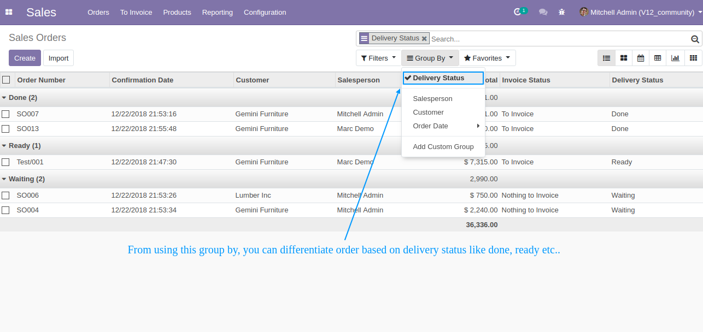

<section class="oe_container">
    <div class="oe_row oe_spaced">
        <div class="oe_span12" style="font-family: 'Lato', 'Open Sans', 'Helvetica', Sans;    color: #444;">
            <h2 class="oe_slogan">Sale Delivery Status</h2>
            <h3 class="oe_slogan">Track your sale order delivery status easily</h3>
            <p class='oe_mt32' style="font-size:16px;">
                An Odoo <b>Sale Delivery Status</b> module allows you to track your sale order delivery status easily. It provides overall delivery status based on number of deliveries that means if you have 3 deliveries in 1 order and in that one delivery is Ready, one is Waiting and one is Done then your overall delivery status is Waiting. The delivery status will done only when all deliveries are done. You can differentiate orders based on delivery status in list view using Group By search.
            </p>

            <div class="col-md-12 mb32"><br/>
                <p style="font-size: 18px;">Track your sale order delivery status now easily. You can see overall delivery status in list view called <b><i>"Delivery Status"</i></b> column.</p>
                <div class="oe_screenshot" align="center">
                    
                </div><br/><br/><br/>
                <p style="font-size: 18px;">You can search orders based on delivery status and differentiate in different status wise. To differentiate order status wise, just select <b><i>"Delivery Status"</i></b> option from <b><i>Group By</i></b> search option. It will gives you list of records status wise. You can also count that records status wise from this feature.</p>
                <div class="oe_screenshot" align="center">
                    
                </div><br/><br/><br/>
                <p style="font-size: 18px;">In particular sale order, you can see "Delivery Status" field to view delivery status. This field is auto populated based on overall deliveries. If the sale order has no delivery then this field is hide. This field is only visible when deliveirs are created.</p>
                <div class="oe_screenshot" align="center">
                    
                </div>
                <br/><center><p style="font-size: 18px;">Do you need support, just write me at <a href="mailto:hareshkansara00@gmail.com">hareshkansara00@gmail.com</a></p></center>
            </div>
        </div>
    </div>
</section>